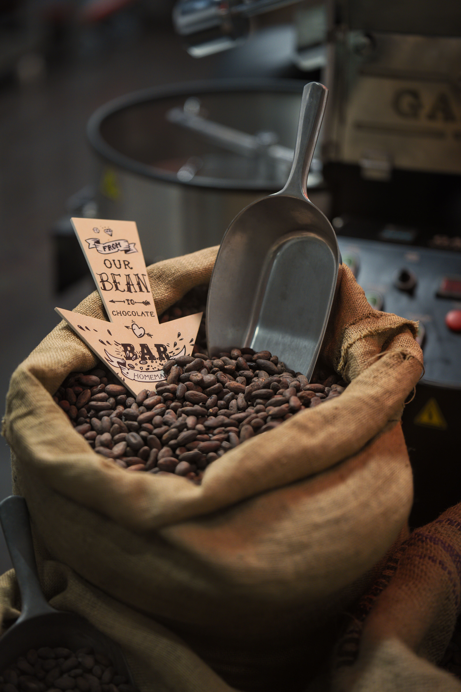
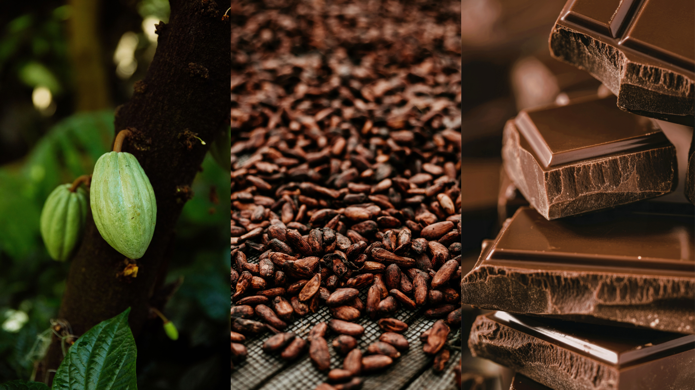
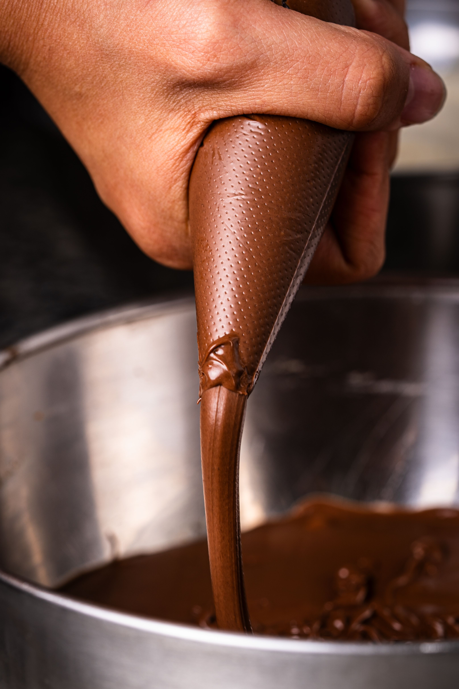

Photo à venirarticle-3-gestes.jpg
Dégustation
Dégustation · Origine · Transmission
Je fais déguster le chocolat comme on déguste un vin : par l'origine, le terroir, le geste du producteur. Vingt-cinq ans à déguster pour vous faire redécouvrir la tablette de chocolat.
« Le chocolat ne se mange pas, il se raconte. Chaque tablette porte l'histoire d'un sol, d'un climat, d'une main. »

Emmanuelle de Beauregard — formée au CIRAD, jury AVPA
Bean to Bar ?
On en entend de plus en plus parler, mais savez-vous vraiment ce que ça veut dire — et pourquoi ça change tout dans votre tablette ?
100% naturel, sans additif, sans émulsifiant, sans conservateur.
Chaque étape est maîtrisée à la main, du début à la fin.
Une démarche durable et totalement transparente.
L'artisan chocolatier torréfacteur choisit chaque origine avec soin, transforme la fève à la main, et raconte son histoire dans chaque carré de chocolat. Un chocolat qui a du goût, du sens, et une vraie identité.
Deux façons de me suivre
À domicile ou en team building sur mesure. 1h30 pour apprendre à lire une tablette comme un dégustateur, en groupe de 4 à 10 personnes.
Dès 50€ / pers.
Voir les ateliers →Deux abonnements au choix — "Bean to Bar" ou "Sélection de la Croqueuse". Trois envois de trois tablettes par an, pour voyager d'une origine à l'autre.
159€ TTC / an
Découvrir le parcours →Envie d'une tablette sans engagement ? Direction la boutique →
Qui je suis
Je m'appelle Emmanuelle de Beauregard. Formée à l'analyse sensorielle au CIRAD, je suis devenue ambassadrice des artisans chocolatiers avant de créer La Croqueuse de Chocolat, pour transmettre ce que la dégustation m'a appris : le chocolat se lit, se sent, se comprend.
Retrouvez-moi aussi sur Instagram — Croqueuse by Emmanuelle
Mon parcours en entierLe journal

Dégustation

Jury & concours
À paraître